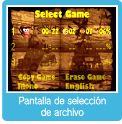
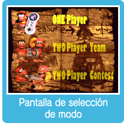

Oprime en la pantalla del título para pasar a la pantalla de selección de archivo. Usa para elegir una opción u oprime para confirmar tu selección y pasar a la pantalla de selección de modo.
Escoge ONE Player (un jugador) para jugar tú solo, TWO Player Team (equipo de dos jugadores) para jugar con un amigo de forma cooperativa o TWO Player Contest (competición de dos jugadores) para competir contra otro jugador y ver quién puede completar el máximo número de niveles en el menor tiempo posible. Selecciona Copy Game (copiar juego) para copiar un archivo y Erase Game (borrar juego) para borrarlo. Cuidado: no podrás recuperar los datos borrados.

Durante juegos de varios jugadores, cada jugador necesitará un control compatible con la Consola virtual. Para obtener más información, ve el Manual de Operaciones del Wii.


 en la pantalla del título para pasar a la pantalla de selección de archivo. Usa
en la pantalla del título para pasar a la pantalla de selección de archivo. Usa  para elegir una opción u oprime
para elegir una opción u oprime  para confirmar tu selección y pasar a la pantalla de selección de modo.
para confirmar tu selección y pasar a la pantalla de selección de modo.